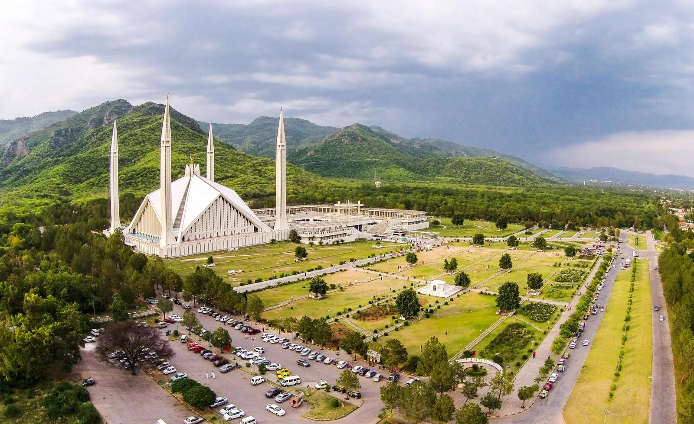

A little preparation can make a northern Pakistan trip more comfortable, especially when routes are long and weather can change quickly. Use this checklist to organise the essentials, then adapt it to your destination, season, group and travel style. Costs and availability change, so confirm current prices directly before travelling.
Transport checklist
Confirm your starting city, route, vehicle type and driver arrangements. Ask about fuel, tolls, parking, waiting time, driver accommodation and whether local jeeps or other specialist transfers are separate. Check vehicle suitability for mountain roads and do not assume a small car can reach every attraction.
Accommodation checklist
Verify dates, room type, meals, heating, hot water, washroom arrangements, charging access and cancellation rules. In remote areas, facilities may be simpler than in major cities. Keep booking confirmations accessible offline.
Packing checklist
Pack comfortable walking shoes, layered clothing, a waterproof outer layer, warm evening wear, sunblock, sunglasses, a hat, reusable water bottle, basic first-aid supplies, personal medication, toiletries and a small daypack. Add gloves or thermal layers for high-altitude or cold-season travel.
Documents and digital preparation
Carry valid identification and any documents required for your trip. Save booking details, emergency contacts and maps for offline access. Keep a power bank and charging cables, and let someone know your broad itinerary if you are heading into remote areas.
Budget categories
Estimate transport, accommodation, meals, entry tickets, local guides, activities, equipment, mobile connectivity and an emergency reserve. Ask for a written breakdown of what a tour quote includes and excludes; a low headline price may not include every transfer or activity.
Health and safety
Travel at a pace appropriate for your group, stay hydrated and take altitude seriously. Check weather and road conditions before setting off, avoid driving in dangerous conditions, and use qualified local guides for unfamiliar or demanding trails.
Responsible travel
Carry rubbish back with you, respect local customs, ask before photographing people, conserve water and avoid disturbing wildlife. Support local businesses where possible and follow instructions in protected areas.
Final 48-hour check
Reconfirm accommodation, driver or transport, weather, road access and meeting points. Charge devices, download offline maps, carry some cash where appropriate and keep one flexible plan in case a route changes.
Plan your Pakistan trip
Tell Past Enlighten your dates, group size, preferred pace and interests. Confirm current route access, inclusions and prices before finalising your plan.
Ask Past EnlightenTravel conditions, opening arrangements and prices can change. Verify current local information before departure.